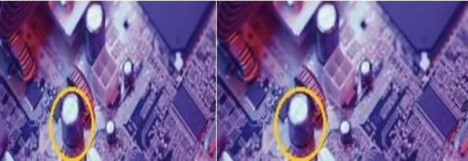
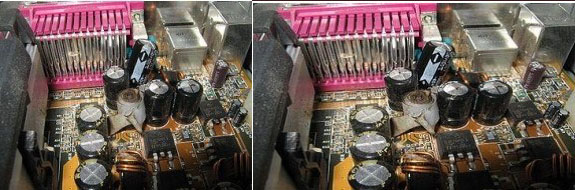
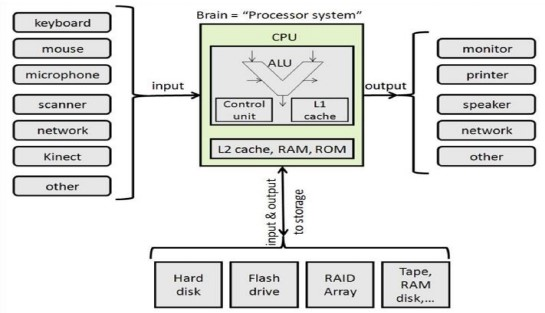

Capacitors are often referenced in many troubleshooting guides around the Internet; however, you’ll hear about them most when it comes to the motherboard. Even though we see capacitors referenced quite a bit, we might not know what they are our even what they do.
Follow along below, and we’ll show you why they’re so important.

In layman’s terms, a capacitor is a tiny electrical component soldered to the motherboard. Capacitors perform a couple of different functions. First, a capacitor conditions DC voltage to other components (e.g. the video card, hard drive, sound card etc.) as a way to provide a steady stream of power. Finally, a capacitor can also hold or store an electric charge to be discharged at a later time, such as in the case of a camera flash.
What you see on the motherboard is a ceramic and plastic container. On the inside of that is usually two or a set of two conductive plates with a thin insulator between them. And then, you, of course, have that packaged inside the fore mentioned container for protection.
When a capacitor receives a direct current, a positive charge will build up on one end of the plates while a negative charge builds up on the other plate. This positive and negative charge is stored in the capacitor until it’s discharged.
So, that’s what capacitors are, but what do they do? As we already mentioned, one of the functions of a capacitor is that it conditions power to be sent to other components. The reason for this is that, while components rely on electricity to run, they’re also very sensitive to swings in voltage. For instance, a voltage surge or spike could completely fry all of the components within your PC. After spending a good amount of money on hardware, that’s not something you really want. Unfortunately, voltage amounts change all the time — they aren’t constant. So, how do you stop it from frying your components? With a capacitor.
A capacitor is placed in line to your component and absorbs spikes in power, creating a constant steady stream of the electricity or voltage needed to power your component. And while capacitors can handle some spikes in voltage, it’s always good to have a UPS or surge protector as a first line of defense. There are, of course, other types of capacitors as well. Using the example of a flash camera, your typical battery isn’t going to be capable of producing the sheer amount of electrons needed to create the flash. That’s why there’s a photo flash capacitor built into the camera. In as simple terms as possible, it’s a electrolytic capacitor that charges up from the battery, holding that charge, and then discharging it when it has enough charge) to create the light energy for the flash. And so, a capacitor is able to hold a charge until it is to be discharged at a later time. Unfortunately, like many things, capacitors are subject to wear and tear.
That said, they can blow or bulge. When a capacitor fails, your component isn’t going to work anymore. In extreme scenarios, you might see the casing almost entirely melted. But, in more common instances, you’ll see the vents bulging (top of the capacitor).
Capacitors can’t be repaired — they have to be replaced. There’s no way around that. All you need is the (correct) capacitor replacement and tools to solder it back onto the motherboard. However, it’s not recommended that you do this if you don’t know what you’re doing or have never used the tools to solder a capacitor back on.
Instead, most people opt for sending the motherboard to a repair facility or even just go ahead buy a brand new one. In other words, if you haven’t done this yourself before, it’s wise to leave it alone. You don’t want to risk hurting yourself and potentially damage additional parts of the motherboard.

And that’s how capacitors work! At first, they may seem like unimpressive little components scattered around your motherboard that don’t mean anything. However, they’re an integral part to how the motherboard and other components receive power.
In the first module, we saw a simple block diagram of the computer processing data and creating information. This is simply an update with some of the hardware we talked about shown (along with some sample I/O devices). It's still simple!  Lots of people call the CPU the brain of the computer - an overly simple analogy. But if we're going to use it, let's include the brain's short-term or working memory, RAM with cache being even shorter-term memory. If you share my distaste for the label of "brain", we can call it the computer's "processor system".